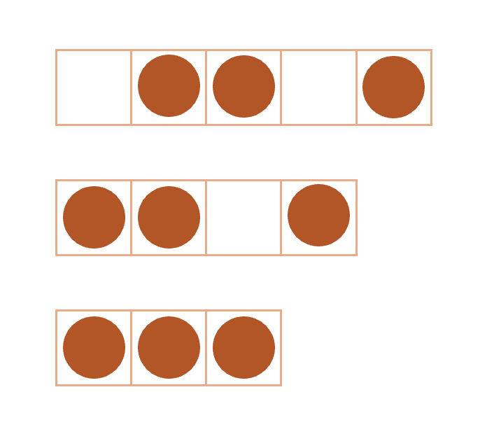
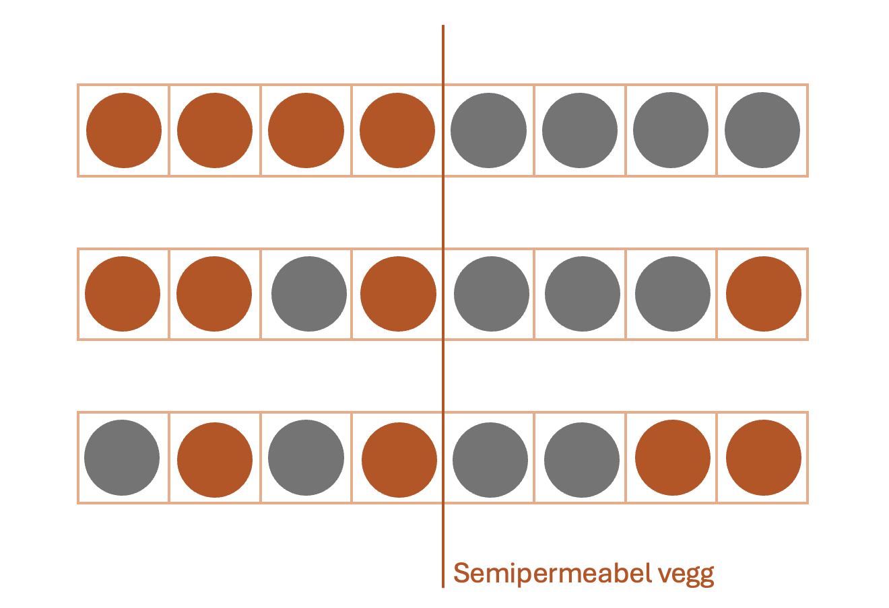
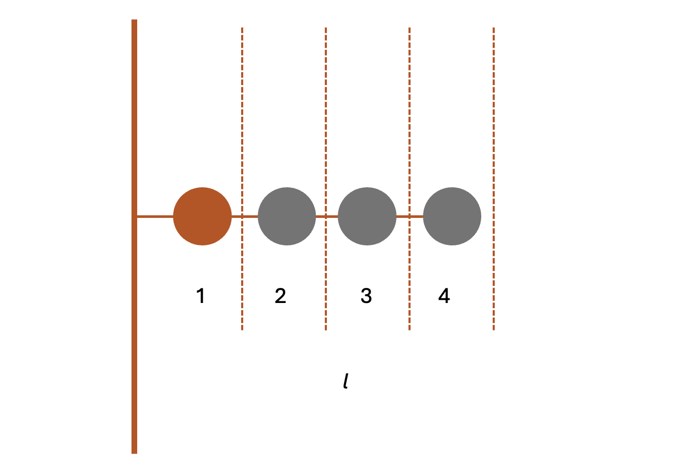
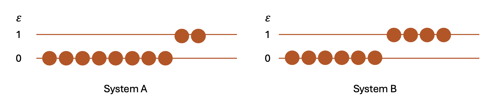

Uke 1 – Statistisk mekanikk og mikro–makro-sammenhengen#
Læringsutbytte
Etter å ha jobbet med dette temaet skal du kunne:
forklare forskjellen mellom en mikrotilstand og en makrotilstand
forklare hvorfor statistiske beskrivelser er nødvendige for systemer som består av svært mange partikler
beskrive energi som en egenskap ved mikrotilstander og som en størrelse som kan fordeles mellom molekyler på mange ulike måter
bruke Boltzmanns entropidefinisjon til å knytte entropi til antallet mikrotilstander som er forenlige med en gitt makrotilstand
forklare hvorfor makrotilstander med mange mikrotilstander er mer sannsynlige enn makrotilstander med få mikrotilstander
Diskusjonsoppgaver#
Oppgave 1#
a) Hva er forskjellen mellom en mikrotilstand og en makrotilstand? Gi et eksempel.
b) Hva legger vi i begrepet multiplisitet?
c) Hvordan henger multiplisitet og sannsynlighet sammen?
d) Når vi teller mikrotilstander, må vi skille mellom det man på engelsk kaller distinguishable og indistinguishable partikler. Forklar forskjellen, og prøv å oversette begrepene til norsk. Hvordan påvirkes opptellingen av mikrotilstander av om det å bytte om to partikler gir en ny mikrotilstand?
Oppgave 2 \(^*\)#
Vi ser for oss \(N\) gasspartikler som kan fordele seg mellom \(M\) bokser. Hver boks representerer en mulig posisjon.
I denne oppgaven skal vi komme frem til en statistisk forklaring på hvorfor en gass sprer seg og utøver et trykk på omgivelsene. Trykket har samtidig en mekanisk forklaring: Partiklene kolliderer med veggene og overfører bevegelsesmengde.
Figuren viser et forenklet system med \(N=3\) partikler og henholdsvis \(M=3\), \(M=4\) og \(M=5\) bokser.
Hvor mange mikrotilstander finnes i hvert av de tre tilfellene dersom hver partikkel kan plasseres uavhengig i en hvilken som helst boks?
Bruk svarene over til å forklare gasstrykk.
Hvordan henger de statistiske og mekaniske forklaringene på trykk sammen?
{kind=link}

Oppgave 3 \(^*\)#
Luften rundt oss er en blanding av ulike molekyler. Dersom det slippes ut helium i ett område av et rom, vil heliumatomene etter hvert spre seg og blandes med luften.
Vi bruker et forenklet gitter med en permeabel skillevegg. Denne gangen har partiklene to ulike farger, og begge typene kan bevege seg mellom de to sidene. Det er fire bokser på hver side av veggen. Makrotilstanden beskrives av hvor mange oransje og grå partikler som befinner seg på hver side.
Se på de tre tilfellene i figuren. Hvilken fordeling av partiklene forventer du å observere oftest?
Bruk multiplisitet og sannsynlighet til å begrunne svaret.
Hva skjer med de relative fluktuasjonene dersom modellen skaleres opp fra noen få partikler til for eksempel 10 000?
Fakulteter blir raskt svært store. Hvordan kan vi regne med slike tall uten å beregne fakultetene direkte?
{kind=link}

Er 10 000 molekyler egentlig et stort fysisk system? Estimer volumet som 10 000 vannmolekyler opptar i flytende vann (bruk \(V_\mathrm{m}=18{,}0\ \mathrm{mL\,mol^{-1}}\)).
Oppgave 4 \(^*\)#
Når en gummistrikk strekkes, trekker den seg tilbake når vi slipper den. En viktig del av forklaringen er at polymerkjeder kan danne langt flere foldede enn fullt utstrakte konformasjoner.
Vi bruker en enkel modell av en polymer som består av fire kuler bundet sammen. Figuren viser den fullt utstrakte konformasjonen. Størrelsen \(l\) angir polymerens utstrekning.
Finn multiplisiteten til de ulike tillatte lengdene polymeren kan ha (ulik verdi av l) og bruk denne til å forklare hvorfor polymeren har en tilbaketrekkende tendens når den strekkes.
Merk: Den første kulen er festet til veggen og kan ikke endre posisjon.
{kind=link}

Oppgave 5 \(^*\)#
I oppgave 3 så vi på omfordeling av partikler i et gitt system, men vi vet også at energi kan overføres mellom systemer.
Vi ser på to delsystemer, A og B, med ti partikler hver. Hver partikkel kan befinne seg i grunntilstanden med energi \(0\) eller i en eksitert tilstand med energi \(\varepsilon\). Hvis \(n_A\) og \(n_B\) er antallet eksiterte partikler, er energiene \(U_A=n_A\varepsilon\) og \(U_B=n_B\varepsilon\).
Til å begynne med er \(U_A=2\varepsilon\) og \(U_B=4\varepsilon\). Når delsystemene settes i termisk kontakt, kan energien fordeles på nytt, mens totalenergien er bevart.
Beregn multiplisiteten for situasjonen hvor \(U_A=2\varepsilon\) og \(U_B=4\varepsilon\).
Hvordan forventer du at energien er fordelt etter at systemet har oppnådd termisk likevekt?
Siden energien er bevart har vi alltid at \(n_B=6-n_A\). Beregn den samlede multiplisiteten for energifordelingene til den mest sannsynlige makrotilstanden (hvor systemet befinner seg i termisk likevekt).
Betyr termisk likevekt at energien alltid må være fordelt helt likt mellom små delsystemer? Begrunn svaret.
{kind=link}

\(^*\) Oppgavene er inspirert av eksempler fra Dill, K. A., Bromberg, S., & Stigter, D. (2010). Molecular Driving Forces. Garland Science. https://doi.org/10.4324/9780203809075
Regneoppgaver#
Oppgave 6#
Vi har et system med \(N=5\) partikler og to bokser, A og B. Hver partikkel kan befinne seg i én av boksene, og de to boksene er like sannsynlige.
\(n_A\) |
0 |
1 |
2 |
3 |
4 |
5 |
|---|---|---|---|---|---|---|
\(\Omega(n_A)\) |
a) Finn multiplisiteten \(\Omega(n_A)\) for 0, 1 og 2 partikler i boks A, og fyll inn verdiene i tabellen.
b) Resten av tabellen kan fylles ut uten nye beregninger. Hvorfor?
c) Anta at alle mikrotilstandene er like sannsynlige. Beregn sannsynligheten for at alle fem partiklene er i boks A, og sannsynligheten for at tre er i A og to i B.
d) For en binomisk fordeling er sannsynligheten for \(n_A\) partikler i A gitt ved
Hva betyr \(p\) i denne modellen, og hvilken verdi har den når boksene er like sannsynlige?
e) Bruk formelen til å beregne \(P(n_A=3)\) og kontroller at svaret stemmer med resultatet i oppgave c.
f) Hva tror du skjer med formen på fordelingen når \(N\) øker fra 5 til for eksempel 50 eller 500? Du trenger ikke regne, men begrunn svaret.
g) Hvorfor er dette relevant for et termodynamisk system med omtrent \(10^{23}\) partikler?
Oppgave 7#
I diskusjonsoppgave 5 så du hvordan energiutveksling mellom to delsystemer fører til den mest sannsynlige energifordelingen (likevekt). Vi ser på de samme delsystemene A og B, men lar nå den samlede energien være
Skriv opp alle mulige fordelinger av de fire eksitasjonene mellom A og B (f.eks. 4 eksiterte partikler i A, 0 i B).
Beregn den samlede multiplisiteten for hver fordeling.
Hvilken energifordeling har størst multiplisitet og er derfor mest sannsynlig?
Forklar hvorfor svaret er rimelig når de to delsystemene er like store og bygd opp på samme måte.
Oppgave 8#
a) Bruk simuleringen over, og se på tilfellet for 4 partikler. Sett opp et uttrykk for sannsynligheten for antall partikler i A. Hvor ofte forventer vi at alle partiklene befinner seg i boks A?
b) Utvid til 100 partikler. Hva blir sannsynligheten for at alle partiklene befinner seg i boks A nå?
c) Hva er sannsynligheten for at partiklene er likt fordelt mellom A og B?
d) Hva viser den oransje linjen i simuleringen?
I forelesningene forrige uke så dere på ulike fordelingsfunksjoner - hvilken er brukt her?
Ekstra utfordring: plott funksjonsuttrykket for fordelingen du kom frem til i 1. og sjekk at svaret stemmer med simuleringen.
e) Øk størrelsen på systemet/antallet partikler. Hvordan stemmer søylediagrammet og fordelingsfunksjonen overens nå?
f) Bruk simuleringen. Hvordan ser du at systemet har nådd likevekt?
Oppgave 9 – Ekstra utfordring#
Vi skal nå bruke en enkel modell til å knytte sammen multiplisitet, sannsynlighet og entropi.
Tenk deg overflaten til et fast stoff med \(N\) faste, identifiserbare bindingsplasser for gassmolekyler. Slike bindingsplasser kalles adsorpsjonsplasser. Hver plass kan være tom eller inneholde ett molekyl, og nøyaktig \(k\) av plassene er opptatt. Vi skiller ikke mellom molekylene, men ulike mønstre av opptatte og tomme plasser teller som ulike mikrotilstander. Multiplisiteten er derfor
a) Forklar hvorfor binomialkoeffisienten teller antallet mikrotilstander. Hvis du velger én tilfeldig plass, hva er sannsynligheten \(p\) for at den er opptatt? Hva er sannsynligheten for at den er tom?
For store verdier av \(N\) er det upraktisk å beregne fakultetene direkte. Vi bruker derfor Stirlings tilnærming
som også kan skrives som
b) Bruk Stirlings tilnærming til å vise at
**ekstra:**Vi kan nå utlede \(\frac{S}{k_B}=-\Sigma p_i\ln{p_i}\). For et system med mer enn to mulige tilstander har vi at \(\Omega=\frac{N!}{n_1! n_2! ... n_t!}\). Bruk Stirlings tilnærming og det nevnte uttrykket for multiplisiteten til å utlede \(\frac{S}{k_B}\).